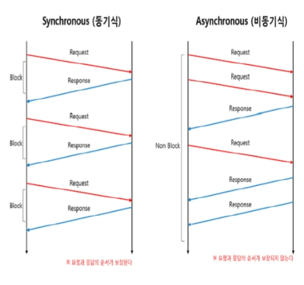
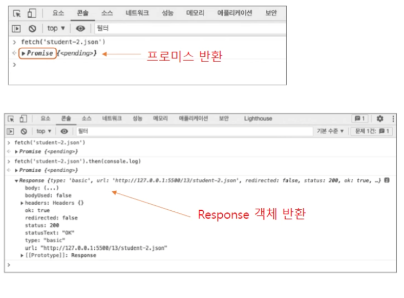

Chapter 13
Chapter 13 summary
비동기 프로그래밍
fetch API
동기 처리 방식과 비동기 처리 방식
예) 커피 전문점에서 커피 주문하고 마시기
<동기 처리 방식>
- A라는 사람이 커피를 주문하면 그 주문을 받아서 커피를 만들고 A에게 넘겨준다.
- 뒤에 아무리 많은 손님이 있어도 한번에 하나의 손님만 처리한다.
- 주문을 받고 커피를 만드는 것이 한 과정이기 때문에 대기 줄이 점점 더 길어지고 주문을 처리하는데도 시간이 걸린다.
<비동기 처리 방식>
- A라는 사람이 커피를 주문하면 그 주문을 주방으로 넘기고,
- A에게는 진동벨을 주면서 커피가 완성되면 알려주겠다고 한다.
- 대기하고 있던 B의 주문을 받고 진동벨을 건네준다.
- 중간에 A의 커피가 완성되면 A에게 알려 준다.

함수 이름을 콜백으로 사용하기
예상하는 프로그램 흐름
function order(coffee) {
// coffee 주문
// 3초 기다린 후 완료 표시
}
function display(result) {
// 커피 완료 표시
콜백을 사용한 프로그램 흐름
function order(coffee, callback) {
// coffee 주문
// 3초 기다린 후 완료 표시
}
function display(result) {
// 커피 완료 표시
}
order("아메리카노", display);
익명 콜백 사용
예) 1초마다 A -> B -> C -> D -> STOP! 순으로 표시하기
function displayLetter() {
console.log("A");
setTimeout(() => {
console.log("B");
setTimeout(() => {
console.log("C");
setTimeout(() => {
console.log("D");
setTimeout(() => {
console.log("stop!");
}, 1000);
}, 1000);
}, 1000);
}, 1000);
}
displayLetter();
프로미스
- 콜백 안에 콜백, 그 안에 또 콜백 …. ➔ 콜백 지옥
- 콜백을 사용했을 때의 복잡함을 피하기 위해, ES6부터 “프로미스(promise)” 등장.
처리가 성공했을 때 실행할 함수와 성공하지 못했을 때 실행할 함수를 미리 약속하자~
프로미스를 사용하려면 Promise 객체를 먼저 만들어야 한다.
성공했을 때 실행할 함수 resolve()와 실패했을 때 실행할 함수 reject()도 함께 지정
new Promise(resolve, reject)
프로미스는 객체를 생성(제작)하는 부분과 소비하는 부분으로 나뉜다.
프로미스 제작 코드에서 ‘성공’ 과 ‘실패’를 확인한 후 소비 코드로 알려준다.
예) 피자 주문 흐름을 만들어 보자
likePizza가 true라면 → 성공했을 때 실행할 함수에 ‘피자를 주문합니다.’ 넘긴다
likePizza가 false라면 → 실패했을 때 실행할 함수에 ‘피자를 주문하지 않습니다.’ 넘긴다
13Wjs\promise-1.js
let likePizza = true;
const pizza = new Promise((resolve, reject) => {
if (likePizza)
resolve('피자를 주문합니다.');
else
reject('피자를 주문하지 않습니다.');
});
프로미스를 실행할 때 사용하는 함수
- then() – 프로미스에서 성공했다는 결과를 보냈을 때 실행할 소스
- catch() – 프로미스에서 실패했다는 결과를 보냈을 때 실행할 소스
- finally() – 프로미스의 성공과 실패에 상관없이 실행할 소스
프로미스객체.then( ).catch().finally();
프로미스객체
.then( )
.catch()
.finally();
프로미스 제작 코드
let likePizza = true;
const pizza = new Promise((resolve, reject) => {
if (likePizza)
resolve('피자를 주문합니다.');
else
reject('피자를 주문하지 않습니다.');
});
프로미스 소비 코드
pizza
.then(
result => console.log(result)
)
.catch(
err => console.log(err)
);
프로미스의 상태
프로미스는 resolve() 함수나 reject() 함수를 매개변수로 받아서 실행하는 객체
프로미스 객체는 resolve() 함수나 reject() 함수를 실행하면서 상태가 바뀜
| 상태 |
설명 |
| pending |
처음 프로미스를 만들면 대기 상태 pending가 됩니다. |
| fulfilled |
처리에 성공하면 이행 상태 fulfilled가 됩니다. |
| rejected |
처리에 성공하지 못하면 거부 상태 rejected가 됩니다. |
프로미스의 상태
| Promise 객체 만들기 |
| 상태 |
"pending" |
| 결과값 |
undefined |
| then() |
| 상태 |
"fulfilled" |
| 결과값 |
"피자를 주문합니다." |
| catch() |
| 상태 |
"rejected" |
| 결과값 |
"피자를 주문하지 않습니다." |
- 제작코드 :
fulfilled 상태인지, reject 상태인지에 따라 ‘피자를 주문합니다.’ 또는 ‘피자를 주문하지 않습니다.’라는 결과값을 넘겨준다.
- 소비코드 : 결과값을
result나 err 같은 변수 이름으로 받아서 사용한다.
여러 단계 연결해서 프로그램 만들기
프로그램은 여러 단계를 연결해서 사용할 경우가 많다.
(예: 서버에서 학생 자료를 가져온다 → 성공하면? 가져온 자료를 객체로 만든다 → 성공하면? 객체에서 필요한 정보만 꺼낸다 → 성공하면? 화면에 표시한다 ….)
여러 단계를 연결할 때 콜백 함수를 사용할 수도 있고, 프로미스를 사용할 수도 있다.
우선, 콜백 함수부터 살펴보자
앞의 피자 만들기 소스에서 프로미스 소비 코드를 줄이면.
|
pizza()
.then((result) => step1(result))
.then((result) => step2(result))
.then((result) => step3(result))
.then((result) => console.log(result))
.then(() => {
console.log('피자가 준비되었습니다. 🍕');
});
|
pizza()
.then(step1)
.then(step2)
.then(step3)
.then(console.log)
.then(() => {
console.log("피자가 준비되었습니다. 🍕");
});
|
fetch API란
- 서버에 자료를 요청하거나 자료를 받아올 때 사용하는 API
XMLHttpRequest를 대신한다.fetch는 프로미스를 반환한다!
fetch(위치, 옵션)
- 위치: 자료가 있는
URL이나 파일 이름
- 옵션:
GET이나 POST 같은 요청 방식 지정 (따로 지정하지 않으면 GET 메서드 사용)
1. VS Code에서 13\fetch.html을 열고 라이브 서버를 사용해서 웹 브라우저에 문서를 표시한다.
(직접 탐색기에서 13\fetch.html을 열면 안 된다!!)
2. 콘솔 창을 열고 다음과 같이 입력
fetch(student-2.json)
3. then()을 사용해 결과 표시
fetch(student-2.json).then(console.log)

XMLHttpRequest 객체 대신 fetch API를 사용해 보자
13\fetch.js
fetch('student-2.json')
.then(response => response.json())
.then(json => {
let output = '';
json.forEach(student => {
output += `
<h2>${student.name}</h2>
<ul>
<li>전공 : ${student.major}</li>
<li>학년 : ${student.grade}</li>
</ul>
<hr>
`;
});
document.querySelector('#result').innerHTML = output;
})
.catch(error => console.log(error));
async 함수
• 프로미스는 콜백 지옥이 생기지 않도록 소스를 읽기 쉽게 바꾼 것
• 프로미스 체이닝은 프로미스를 계속 연결해서 사용하기 때문에 콜백 지옥처럼 소스가 복잡해질 수도 있다
→ 이런 문제를 줄이기 위해 async 함수와 await 예약어 등장
async라는 예약어를 함께 사용하면 그 함수 안에 있는 명령을 비동기적으로 실행할 수 있다.
기본형 async function() { ... }
await
• 프로미스 체이닝을 좀더 쉽게 작성
• async 함수에서만 사용할 수 있다.
whatsYourFavorite() 함수 처리에 시간이 얼마나 걸리든 기다렸다가 결과값을 response에 저장
async function whatsYourFavorite() {
let fav = "Javascript";
return fav;
}
async function displaySubject(subject) {
return `Hello, ${subject}`;
}
async function init() {
const response = await whatsYourFavorite();
const result = await displaySubject(response);
console.log(result);
}
init();